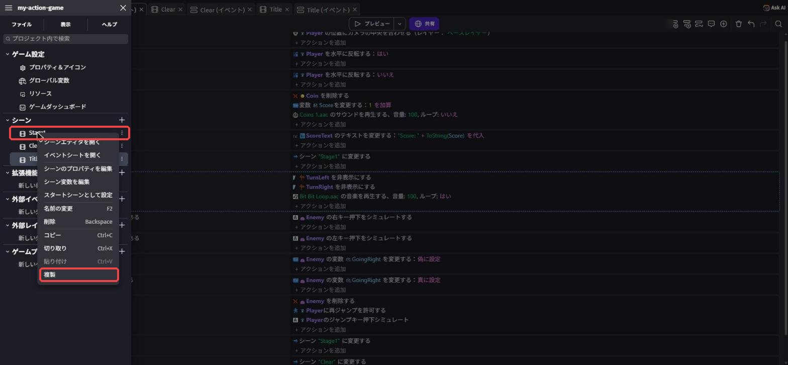
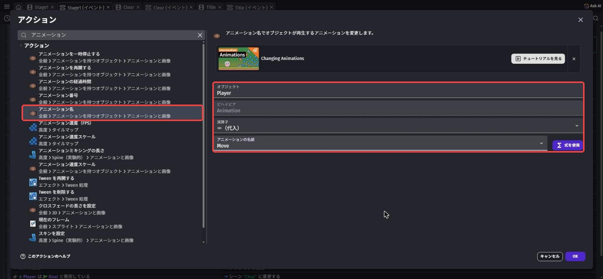
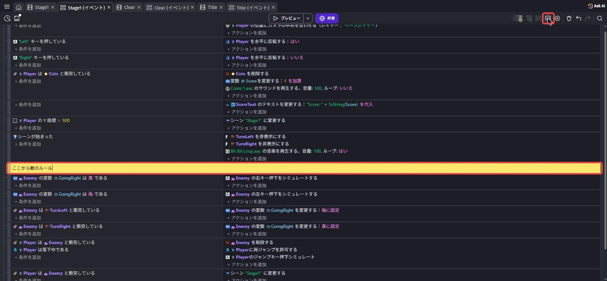
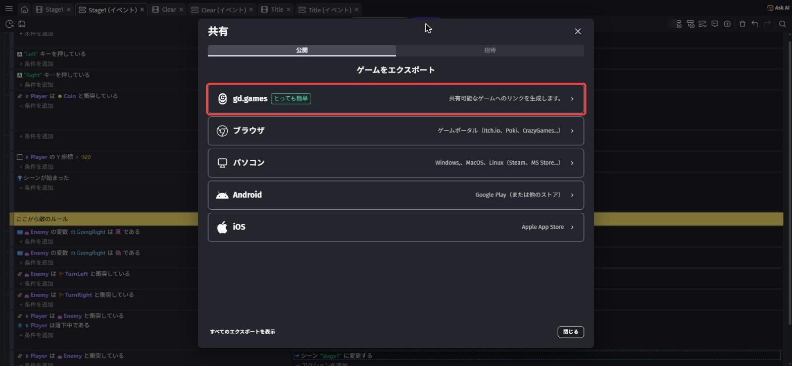

仕上げて発表しよう 〜自分だけの作品に〜
🎯 この章でできるようになること
- 自分のゲームを良くするための「仕上げ計画」を立てられる
- これまで覚えたことを組み合わせて、自分で新しいしかけを作れる
- 人に遊んでもらって、意見をもとにゲームを直せる
- 自分の作品の「こだわり」と「工夫」を、人に伝えられる
※ 第5章までが終わっていない人も大丈夫。
今日は「できているところまで」を自分の作品として仕上げて発表します。
ゴールやタイトル画面がなくても、遊べる部分があれば立派な作品だよ。
6-1. 今日の進め方
「作る → 遊んでもらう → 直す」を何回まわせるかが、作品の完成度を決める
6-2. 仕上げ計画を立てよう
まずは、今日やりたいことを紙に書き出そう。
ポイントは、「絶対やること」と「時間があればやること」を分けること。
欲ばって全部やろうとすると、発表のときに動かない……ということになりがちです。
アイデア一覧（★が多いほどむずかしい）
| アイデア | むずかしさ | 使う知識（復習する章） |
|---|---|---|
| ステージを長くする・穴や敵を増やす | ★ | 第2章・第4章 |
| 背景・タイトル画面・クリア画面を飾る | ★ | 第2章・第5章 |
| トゲや大きいコインなど、新しいしかけを置く | ★★ | 第3章・第4章の課題 |
| ステージ2（Stage2）を作る | ★★ | 第5章（シーンの切り替え） |
| キャラが走る・跳ぶときにアニメーションを切りかえる | ★★★ | 第3章（条件とアクション）＋下の6-3 |
| クリア画面にスコアを出す | ★★★ | 第5章の課題3（グローバル変数） |
課題1: 自分の「仕上げ計画」を書こう
次の3つを紙に書こう。
書けたら講師に見せてから、作業スタート！
- 絶対やること（1〜2個）
- 時間があればやること（1〜3個）
- このゲームのいちばんのこだわり（ひとこと）
ヒントを見る
「絶対やること」は、30分くらいで終わりそうなものにしよう。
迷ったら、第2章の課題3でテストプレイしてもらったときの意見を思い出してみて。
遊んだ人が困っていた場所を直すのも、立派な仕上げだよ。
6-3. 仕上げに使えるワザ集
ここからは、仕上げでよく使うワザを紹介します。
全部やる必要はありません。
自分の計画に必要なものだけ使おう。
ワザ1: シーンをコピーしてステージ2を作る
左上の「≡」でプロジェクトマネージャーを開き、Stage1 を右クリック →「複製」を選ぶと、オブジェクトもイベントも丸ごとコピーされたシーンができます。
右クリック →「名前の変更」で名前を Stage2 に変えて、ステージの形を作りかえよう。

⚠️ 複製したシーンのイベントには、「シーン "Stage1" に変更する」がそのまま残っています。
Stage2 でやられたときは Stage2 からやり直すように、シーン名を書きかえよう。
Stage1 のゴールの行き先を Stage2 に、Stage2 のゴールの行き先を Clear にすればつながるよ。
ワザ2: 走る・跳ぶでアニメーションを切りかえる
アセットストアのキャラには、「Idle（立ち止まり）」「Run（走る）」「Jump（跳ぶ）」のように、いくつかのアニメーションが入っていることがあります。
アニメーションの名前は素材についている名前なので、日本語の画面でも英語のまま表示されます。
Player をダブルクリックして、どんな名前のアニメーションがあるか見てみよう。
Player は移動しているPlayer のアニメーションを変更する："Move" を代入Player はジャンプ中であるPlayer のアニメーションを変更する："Kick" を代入
この教科書の Dino Doux には、Idle（立ち止まり）・Crouch・Hurt・Kick・Move（歩く）・Sneak の6つのアニメーションがあります（ジャンプ用はないので、上の例では Kick で代わりにしています）。
条件は、第4章の「落下中である」と同じ「移動 › プラットフォームビヘイビア › プラットフォームの状態」の仲間から選びます（移動して（→「移動している」）・ジャンプ中（→「ジャンプ中である」）で検索）。
「動いていない」ときの条件は、条件の設定画面にある「条件を反転」のスイッチをONにすると作れます。
アクションは アニメーション と検索して、「アニメーション名」（全般 › アニメーションを持つオブジェクト › アニメーションと画像）を選ぼう。
似た名前の候補がたくさん出るので、「アニメーション名」をよく見て選んでね。
上に「Changing Animations」というチュートリアルの案内が出ることがあるけど、そのままでOK。
どのイベントを上に置くと自然に見えるか、順番もためしてみてね。

もっとかんたんにしたい人は、Player に「プラットフォーマーキャラクターアニメーター」というビヘイビアを追加する方法もあります。
立ち止まり・走る・跳ぶなどのアニメーションを、自動で切りかえてくれます。
ただし、キャラのアニメーションの名前が決まった名前になっている必要があるので、うまくいかないときは上のイベントの方法を使おう。
ワザ3: イベントにメモ（コメント）を残す
イベントが増えてくると、「これ何のイベントだっけ？」となりがち。
イベントを1つクリックして選んでから、イベントシートの右上にある吹き出しのボタンを押すと、選んだイベントの上に黄色いコメント（メモ）が追加されます。
そのまま文字を打って、何もないところをクリックすれば完成。
「ここから敵のルール」のように書いておくと、発表のときに説明しやすくなるよ。

6-4. テストプレイしてもらおう
ある程度できたら、となりの人と交換して遊んでもらおう。
遊んでもらうときは、作った人は説明しないで、だまって見ているのがコツです。
説明しないとわからない部分は、ゲームの中でわかるように直すべき部分だからです。
| 遊んだ人に聞くこと | メモ |
|---|---|
| 遊び方は、説明なしでわかった？ | |
| むずかしすぎた場所・かんたんすぎた場所は？ | |
| いちばん楽しかったところは？ | |
| バグ（おかしな動き）はあった？ |
課題2: もらった意見で1か所以上直そう
テストプレイでもらった意見の中から、1つ選んでゲームを直そう。
直したら、もう一度遊んでもらって「良くなった？」と聞いてみよう。
ヒントを見る
「むずかしすぎる」と言われたら、穴をせまくする・敵を減らす・ジャンプ力を上げる、など直し方はいろいろ。
全部の意見に従う必要はないよ。
自分の「こだわり」とぶつかる意見は、取り入れなくてもOK。
6-5. 発表の準備をしよう
発表では、ゲームを遊んで見せながら、次の順番で話すと伝わりやすくなります。
1人の持ち時間は講師が伝えます。
| 順番 | 話すこと | 例 |
|---|---|---|
| 1 | ゲームの名前 | 「〇〇〇という名前のゲームです」 |
| 2 | どんなゲームか・遊び方 | 「コインを集めながらゴールを目指します。敵は上から踏むと倒せます」 |
| 3 | いちばんのこだわり | 「夜の街をイメージして、背景と音楽をそろえました」 |
| 4 | 苦労したこと・どう解決したか | 「敵を踏むとやり直しになるバグがあって、イベントの順番を入れかえて直しました」 |
| 5 | 次にやってみたいこと | 「ステージ2を作って、ボスを出したいです」 |
課題3（チャレンジ）: 「苦労したこと」を具体的に話そう
発表の4番目「苦労したこと・どう解決したか」を、どんなイベントを、どう直したかまで具体的に話そう。
聞いている人が「自分も同じところでつまずくかも」と思えたら大成功。
ヒントを見る
失敗の話は、発表でいちばん役に立つ部分です。
つまずきポイント集で読んだことや、AIに相談したことを思い出してみよう。
「最初は〇〇だと思ったけど、実は△△だった」という話し方をすると伝わりやすいよ。
6-6. 作品の公開について（任意）
GDevelopには、作ったゲームをインターネットで遊べるように公開する機能があります。
画面の上の真ん中にある「共有」ボタンを押すと、公開のしかたを選ぶ「共有」の画面が開きます。
「公開」タブのいちばん上の「gd.games」（「とっても簡単」のマークつき）を使うと、遊べるURLが作れます。
公開すると、家族や友だちにURLを送って遊んでもらえます。
ただし、公開は講師の確認が終わってからにしてください。
- ゲームの中やタイトル・説明文に、本名・学校名・住所などを書かない
- アセットストアの無料素材や自分で作った素材だけを使っているか、もう一度確認する
- ライセンスが CC-BY の素材を使ったら、作った人の名前（クレジット）をタイトル画面などに書く（この教科書の Dino Doux なら「Dino Doux by ScissorMarks」）
- 公開するかどうかは、保護者の方とも相談して決める

いちばん上のgd.gamesで公開できる（講師の確認が終わってから）
6-7. この先の3つの道
全6回の導入はこれでおしまい。
ここから先は、自分で進む道を選びます。
どの道を選んでも、この6回で身につけた「条件 → アクションで考える力」と「自分で原因を探して直す力」が土台になります。
どれを選んでもOK。
大事なのは「自分が何を作りたいか」
| 道 | こんな人に向いている |
|---|---|
| 道1 GDevelopでオリジナル制作 | 今日のゲームをもっと大きくしたい人、まったく新しいゲームを作りたい人 |
| 道2 ほかの技術を自分で学ぶ | Unity・Webサイト・プログラミング言語など、気になる技術がある人 |
| 道3 講師と生成AIで調べながら作る | 作りたいものはあるけど、どの技術を使えばいいかわからない人 |
次の講習までに、どの道を選ぶか、そしてその理由を考えてきてください。
まだ決められない人は、「作ってみたいもの」をひとつ考えてくるだけでもOKです。
6-8. 🚨 つまずきポイント集
いろいろ変えていたら、急にゲームがおかしくなった
原因: 最後に変えたところが原因のことがほとんど。
直し方: まず Ctrl + Z⌘ + Z で1つずつ戻して、どこで直るか確かめよう。
これからは「1つ変えたらプレビューで確認」をくせにしよう。
発表の直前に、新しいことを始めて壊れた
原因: 時間ギリギリの大きな変更。
直し方: 発表の15分前からは、新しいしかけを作るのはやめて、テストプレイと発表練習だけにしよう。
Ctrl + S⌘ + S の保存も忘れずに。
Stage2 でやられると Stage1 に戻ってしまう
原因: 複製したシーンのイベントで、「シーンを変更する」の行き先が Stage1 のまま。
直し方: Stage2 のイベントシートで、やり直しのイベントの行き先を Stage2 に書きかえよう（6-3のワザ1）。
アニメーションが切りかわらない・変な動きになる
原因1: アニメーションの名前が、キャラに入っている名前と1文字でもちがう（大文字・小文字も区別される）。
→ Player をダブルクリックして、アニメーションの名前を確認しよう。
原因2: イベントの順番で、あとのイベントが上書きしている。
→ 「跳んでいる」のイベントを「走っている」のイベントより下に置くと、空中ではJumpが優先されるよ。
💡 15分たっても直らないときは、次の「AIを味方につけよう」の方法で相談してみよう。
発表の日は時間が限られているので、早めに講師を呼ぶのもアリです。
6-9. 🤖 AIを味方につけよう
最終回のAIの使い方は、「作品をもっと良くするための相談相手」。
ただし、作品と発表の主役はキミです。
この章でのAIの使い所
✅ 良い使い方 — 自分で考えたものを、もっと良くするために聞く
- 発表原稿のチェック: 自分で書いた原稿を見せて、わかりにくいところを指摘してもらう
- この先の道の相談: 自分の興味を伝えて、どんな技術があるか教えてもらう（選ぶのは自分）
そのままコピペで使えるプロンプト（AIへの指示文）の例:
GDevelopで作った横スクロールアクションゲームの発表原稿を書きました。
書き直さずに、「聞いている人にわかりにくいところ」を3つだけ指摘してください。
（ここに自分の原稿をはりつける）
次は「〇〇〇（作ってみたいもの）」を作ってみたいです。
どんな技術や道具があるか、中学生でも始めやすい順に3つ教えてください。
それぞれの良いところと大変なところも教えてください。
🚫 やめておこう
- 発表原稿をAIにまるごと書いてもらう（自分の言葉で話すから、作品の良さが伝わる！）
- 「どの道を選ぶか」をAIに決めてもらう（AIは情報をくれるけど、決めるのはキミ）
- AIの答えを試して確かめずに信じる（AIは古いGDevelopの画面の話をすることもある。
必ず自分の画面で確認）
6-10. ✅ チェックリスト
全部チェックできたら、GDevelop編 完全クリア！
🎉 空っぽのプロジェクトから、自分の力でゲームを1本作り上げました。
ここで身につけた力を持って、次の道へ進もう。
6-11. 📚 もっと知りたい人へ
- 公式プラットフォーマーチュートリアル Part 4「Animate the Playable Character」（英語） — ワザ2のアニメーション切りかえを公式の手順で
- 公式プラットフォーマーチュートリアル Part 8「Add Checkpoints」（英語） — 中間地点（チェックポイント）を作りたい人向け
- GDevelop公式Wiki — 「Publishing」のページに公開のくわしい説明がある（公開は講師確認後に）
- GDevelop公式サイト — ほかの人が作ったゲームや、上級者向けの学習コンテンツも見つかる